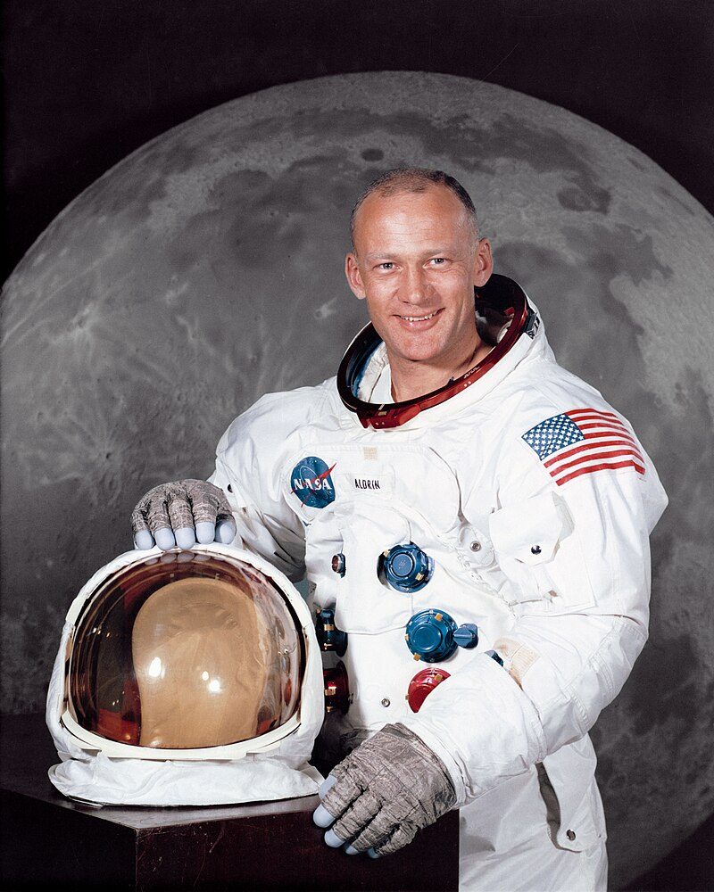

3 #permalink Znani
Kod HTML:
- Kontener
<div class="grid-container">, zawiera kontener z Imieniem, Nazwiskiem i grafiką danej osoby.
Kod CSS:
-
Styl dla sekcji z klasą "grid-container": Ustawia sposób wyświetlania na stronie, dostosowytwuje wyświetlanie siadki grid.
-
Styl z klasą "osoba": Ustawia sposób wyświetlania na stronie, układa flexem, nadaje odstępy i obramowanie.
-
Styl z klasą "textOsoba": ustawia marginesy i kolor tekstu.
-
Media queries są używane do dostosowania układu dla różnych szerokości ekranu. W zależności od szerokości ekranu, zmienia parametry układu aby dostosować się do różnych rozmiarów urządzeń.
Source:
style.css, line 1079
Example

Mikołaj Kopernik

Edwin Hubble

Stephen Hawking

Neil Armstrong

Buzz Aldrin

Yuri Gagarin

Johannes Kepler

Christiaan Huygens
George Gamow
Markup
<div class="grid-container">
<div class="osoba">
<img src="assets/kopernik.jpg" alt="Mikołaj Kopernik" />
<p class="textOsoba">Mikołaj Kopernik</p>
</div>
<div class="osoba">
<img src="assets/hubble.jpeg" alt="Edwin Hubble" />
<p class="textOsoba">Edwin Hubble</p>
</div>
<div class="osoba">
<img src="assets/Stephen_Hawking.jpg" alt="Stephen Hawking" />
<p class="textOsoba">Stephen Hawking</p>
</div>
<div class="osoba">
<img src="assets/NeilArmstrong.jpeg" alt="Neil Armstrong" />
<p class="textOsoba">Neil Armstrong</p>
</div>
<div class="osoba">
<img src="assets/Buzz.jpeg" alt="Buzz Aldrin" />
<p class="textOsoba">Buzz Aldrin</p>
</div>
<div class="osoba">
<img src="assets/Yuri.jpeg" alt="Yuri Gagarin" />
<p class="textOsoba">Yuri Gagarin</p>
</div>
<div class="osoba">
<img src="assets/Kepler.jpeg" alt="Johannes Kepler" />
<p class="textOsoba">Johannes Kepler</p>
</div>
<div class="osoba">
<img src="assets/huygens.jpeg" alt="Christiaan Huygens" />
<p class="textOsoba">Christiaan Huygens</p>
</div>
<div class="osoba">
<img src="assets/Gamow.jpeg" alt="George Gamow" />
<p class="textOsoba">George Gamow</p>
</div>
</div>
Source:
style.css, line 1099